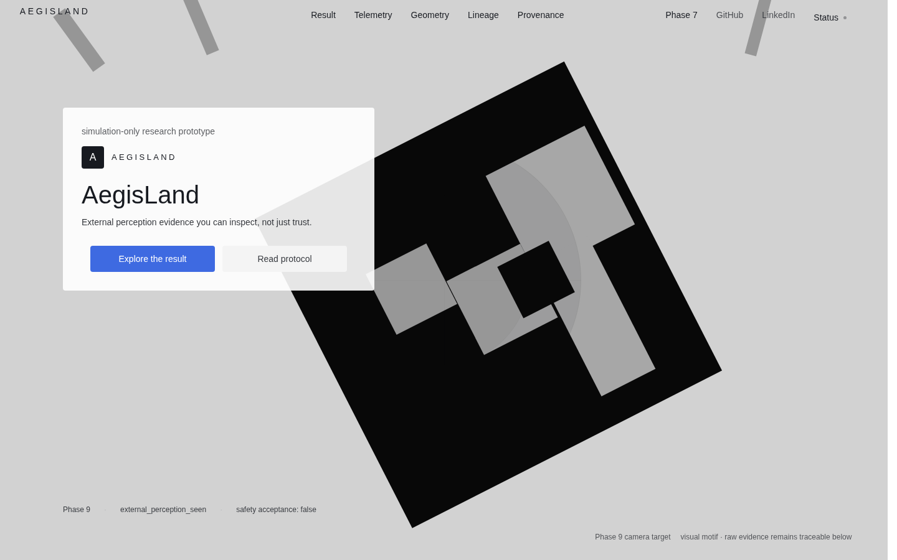

AegisLand
GitHub · suhaslordSolo research · simulation cockpit · ongoing
Problem: perception overconfidence on frozen holdouts; measure unsafe rate without live vehicle authority.
I study perception overconfidence in simulation for UAV safety.
Frozen holdouts. Calibrated abstention. No live vehicle authority.

Lead case
A simulation-only research cockpit for UAV perception reliability and calibrated abstention under constraint.
Not a live autonomy product. Phase 6B work reduced unsafe rates on frozen holdouts from 43% to 1%, with safety_acceptance held at false.
safety_acceptance: falseLive artifacts · Phase 6B
Index
Solo research · simulation cockpit · ongoing
Problem: perception overconfidence on frozen holdouts; measure unsafe rate without live vehicle authority.
Fleet Outreach & BD · Cruze · ongoing
Problem: partner and fleet conversations that stay deliverable, not AI R&D cosplay.
AI Engineer Intern · tooling / integration · prior
Problem: scoped tooling with evaluation clarity, not vague AI surfaces.
Holdouts
Roles
Partner and fleet conversations grounded in what can actually be delivered.
Tooling and integration work with attention to evaluation and clear scope.
Reach
Email is enough. Resume and GitHub are public.
suhas.aug20@gmail.com